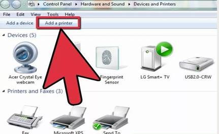
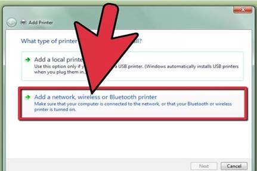
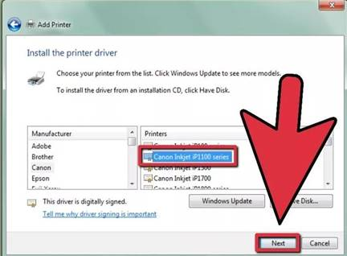
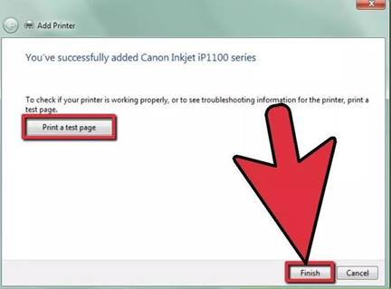

2. To share a printer, follow the steps below.
· Click ‘Start' from the taskbar and click on ‘Devices and Printers' from the popup menu.
· In the new Window that appears, select the printer you want to share and right click on it. In the popup menu select ‘Printer properties'.
· In the dialog box that appears click on the tab ‘Sharing'. Then put a check on the ‘Share this printer', Don't forget to put a ‘share name'. Note this down as it will enable you to quickly locate the printer on the network,
· Click ‘Apply' and then ‘Ok' to apply the settings.
3. Click ‘Start' from the taskbar and in the popup menu click on ‘Computer'. The printer settings ought to found under the ‘System Task' if not, click ‘Start' from the taskbar and click on ‘Devices and Printers' option in the popup menu that appears therein.

5.  After clicking the Add a printer. a new page appears, you will be provided with two options, i.e. Local Printer Attached to this computer and A network printer or a printer attached to another computer. Choose the latter and click ‘Next'. In the new page that appears, you will be prompted to specify the printer to connect to. Choose the option ‘Browse for a printer' and click ‘Next'. This will locate the nearest printer next to you. The process may take quite some time to complete so be patient.

6. Upon finishing the search, all printers that are attached to the network will be listed. Click on the name of the printer that you noted down earlier and hit NEXT.

7. Upon completing the installation procedure, you will be prompted to print a test page. This is a test to ensure that the connection is okay.